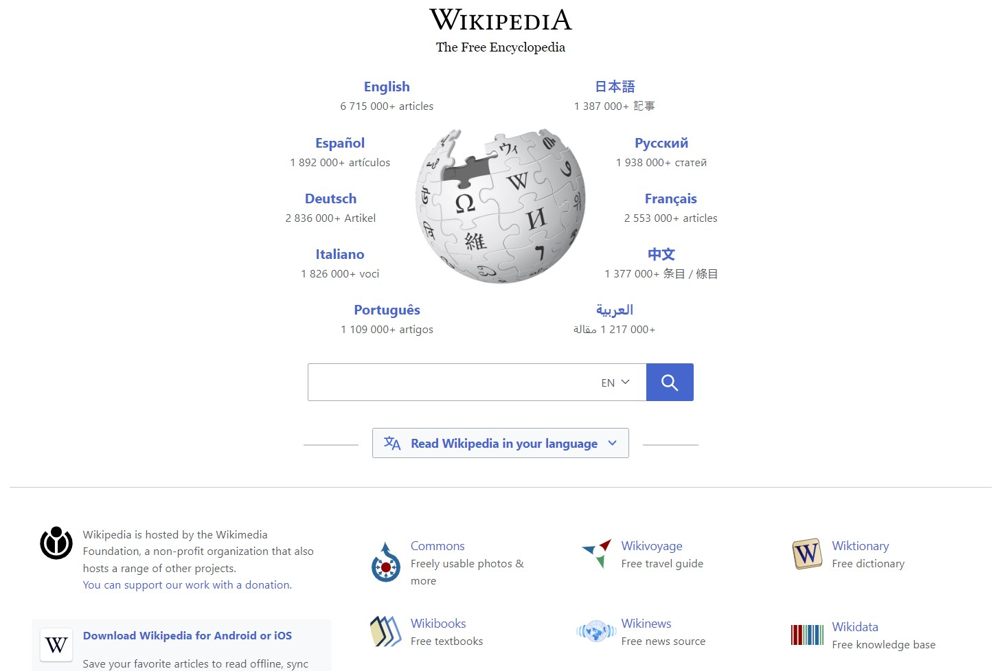

In Steve Krug's book Don't Make Me Think, he dedicates an entire chapter to the home page of websites. As someone born into the Internet, I never put much stock into home pages -- and their essential purpose. Much like an opener to a TV show, a home page shouldn't be an afterthought. Many thoughts need to be dedicated to these intros of a product actually; they're the first line of defense in keeping a user's attention engaged. And a shoddy first impression is easy to accidentially trigger in our age of shorter attention spans.
A home page should adequately summarize the purpose of a website while showing users just how to achieve that purpose. Krug has five fundamental questions to ask about any home page to see if it does its job well. And I thought, what better way to see those questions in action than to choose a website and ask them? Enter left stage: Wikipedia's home page.
It's rather simple -- short and sweet. Kind of ironic that the literal database of everything has such a basic home page... But I think it works in Wikipedia's favor. It's always better to start high-level and let the users navigate to the details themselves.
Anyways, onto Krug's five questions to ask when dropped onto a wild home page:
- What is this?
- What can I do here?
- What do they have here?
- Why should I be here -- and not somewhere else?
- Where do I start?
I think Wikipedia is enough of a household name that #1 doesn't explicitly need to be stated, but even so, its tagline of "The Free Encyclopedia" is pretty self-evident. After that, I answered #2 and #3 with the keywords article (in many different languages) and read: there's a bunch (understatement) of articles here and you can read them. For free even! Which is #4 crossed off, because a growing amount of information on the Internet is being locked behind paywalls in this day and age. But not Wikipedia, which is why users from students to anyone else alike flock here for credible sources. And lastly, the conveniently placed search bar is a great place to start (#5) if users didn't already come from a specific article link.
It's great to see theory in practice with analysis like these. And it's also reassuring that even the biggest of websites need to follow basic design guidelines to be effective. Some design tips really are universal, which is why it's so important to learn some fundamentals of design before diving in.